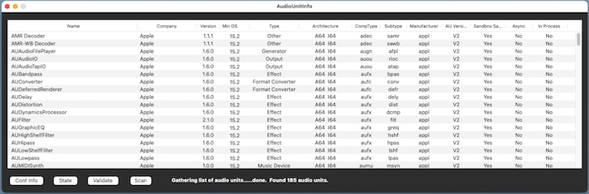

|
|
AudioUnitInfo Help |
Usage

Open AudioUnitInfo, press the Scan button, then wait for the list to be populated. Installed audio units are initially displayed in alphabetical order by name. Clicking on any column header will allow sorting by the contents of the selected column.
Select any row in the list, then press one of the buttons for additional information (Conf Info or State), or press the Validate button to run validation tests on the selected audio unit using the auval utility.
Selecting one or more rows will display the count of the number of audio units selected.
Minimum OS:
| 15.x | Sequoia | |
| 14.x | Sonoma | |
| 13.x | Ventura | |
| 12.x | Monterey | |
| 11.x | Big Sur | |
| 10.15.x | Catalina | |
| 10.14.x | Mojave | |
| 10.13.x | High Sierra | |
| N/A | The audio unit does not report a minimum version |
Architecture information is not available for every audio unit installed. AudioUnitInfo will only attempt to determine the architecture for the audio units installed in /Library/Audio/Plug-Ins/Components and ~/Library/Audio/Plug-Ins/Components. However, one can probably assume that the other installed audio units, such as those from Apple, have an architecture that matches the native architecture of your system. Possible architectures:
| A64 | ARM 64-bit (Apple M1, M2, M3, M4, etc.) | |
| I64 | Intel 64-bit | |
| I32 | Intel 32-bit | |
| PPC | PowerPC | |
| N/A | Not available (cannot determine, etc.) |
CompType, Subtype, and Manufacturer: The CompType (component type), Subtype, and manufacturer columns show the four-character codes used by host applications to load a particular audio unit.
Sandbox Safe: The Sandbox Safe column indicates whether it is safe to open the audio unit in a sandboxed process.
Async: The Async column indicates audio units that require asynchronous instantiation.
In Process: The In Process column indicates whether the audio unit can be loaded into the current process. This is always true for V2 audio units; it depends on the packaging in the case of a V3 audio unit. Note that this flag will change based on the hosting process.
Conf Info: Pressing the Conf Info button results in a display of the basic configuration information for the selected audio unit.
State: Pressing the State button results in a display of a snapshot of the selected audio unit's properties and parameters, which is the same data that would be saved as a preset by the AU or a host. Most of the state data for many audio units is a list of numbers that have little meaning to a user, but there may be some interesting information before or after the data fields.